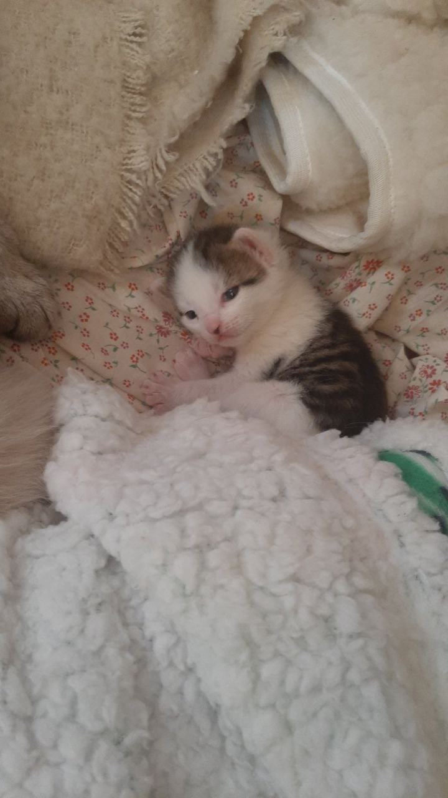
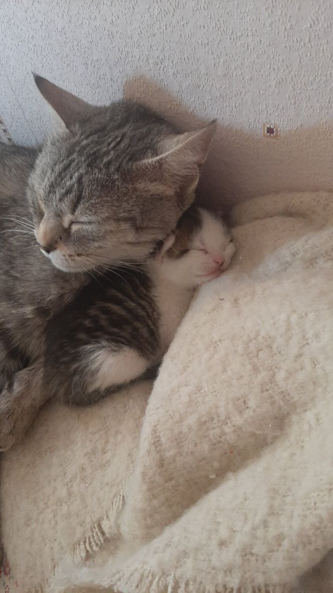
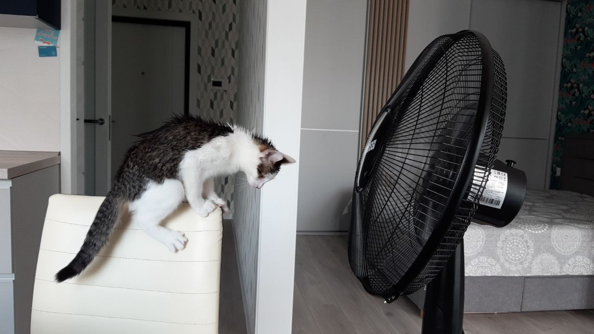
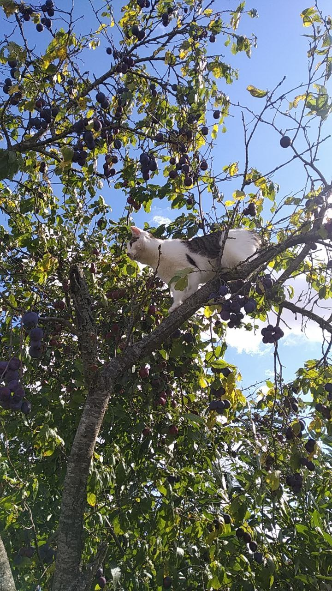
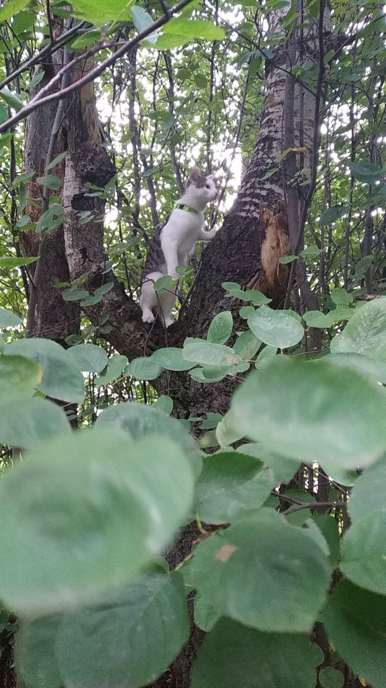
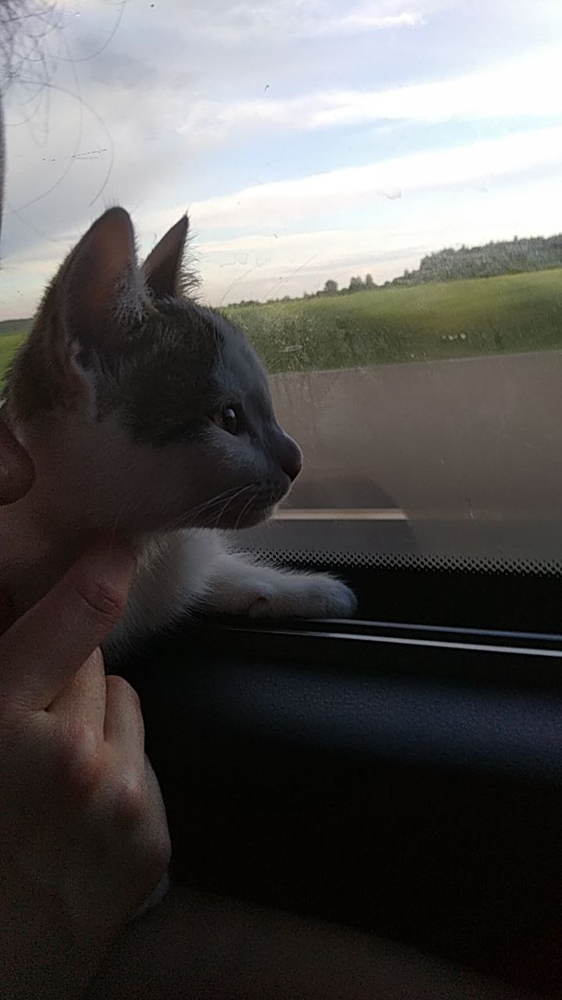
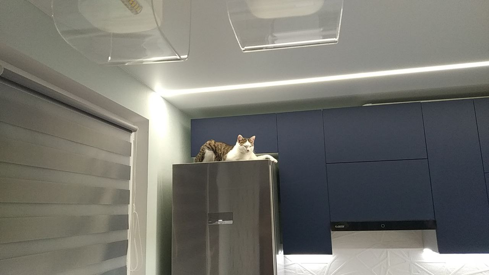
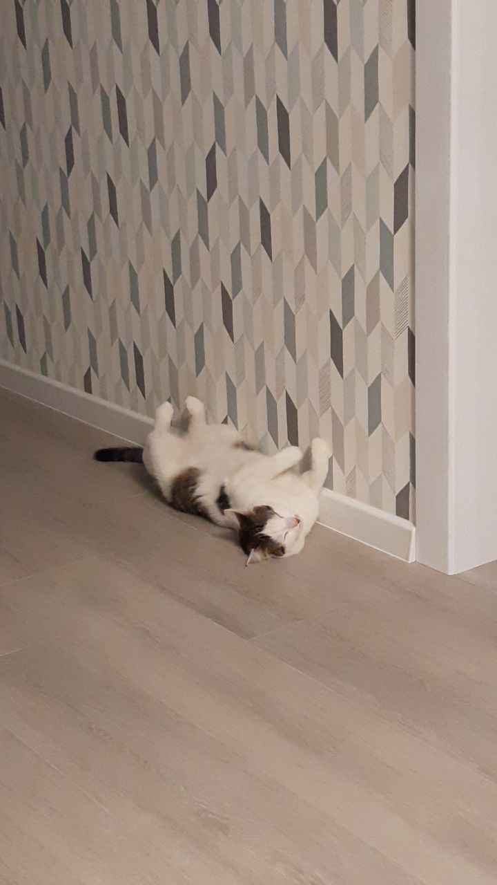

О появлении Шлепы
Кошка по имени Шлепа появилась на свет 19 марта 2021 года в городе Осиповичи Могилевской области Республики Беларусь. Уже тогда она выделялась своей мимишностью и стрелками над глазами. Именно эти стрелки и стали причиной появления этой животины у меня дома.
 
Она очень быстро освоилась на новом месте и взяла все в свои лапы.
ВверхШлепины профессии
За 1,5 года Шлепа освоила несколько разноплановых профессий.
- Крутильщик барабана стиральной машины
- Парикмахер
- Борец с вентилятором
- Сборщик слив
 
ВверхШлепины увлечения
У Шлепы столько увлечений, что можно позавидовать.
- Лазанье по деревьям
- Путешествия
- Ведение наблюдения с холодильника
- Игра в умирающего
- Валяние в песке
- Попытки побега
   
Вверх